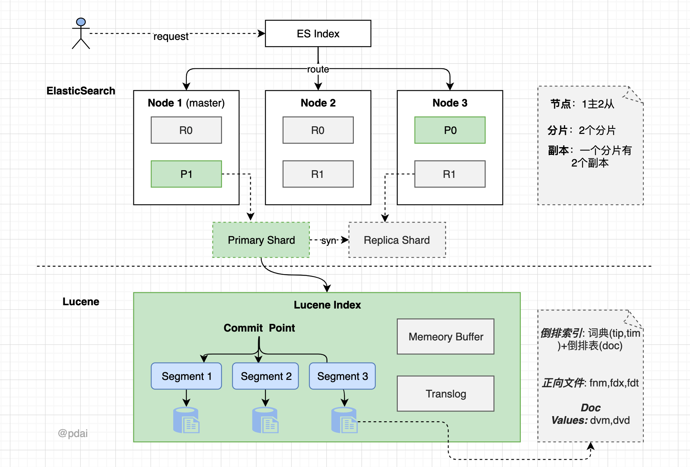
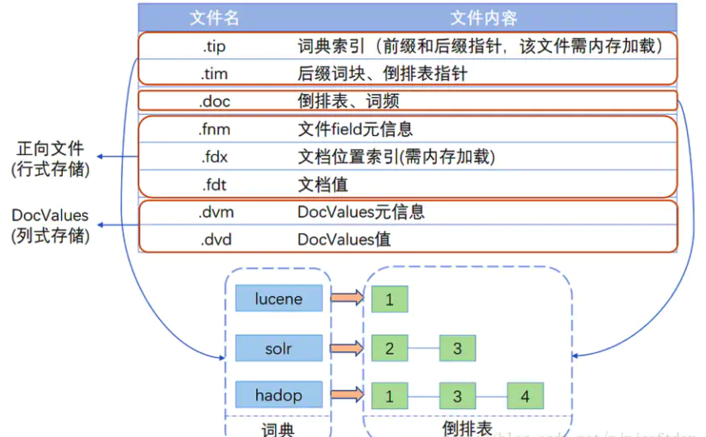
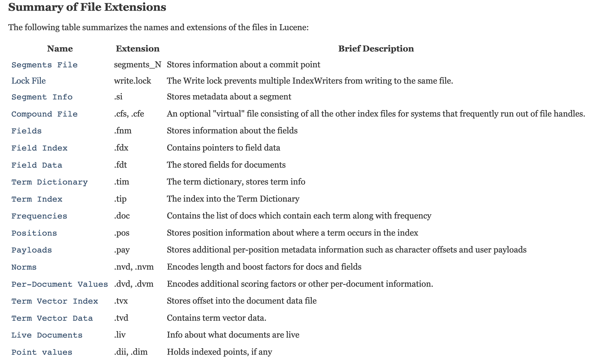
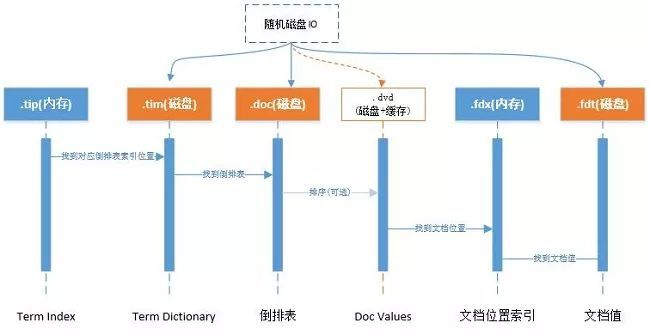

- 01 认知：ElasticSearch基础概念.md.html
- 02 认知：Elastic Stack生态和场景方案.md.html
- 03 安装：ElasticSearch和Kibana安装.md.html
- 04 入门：查询和聚合的基础使用.md.html
- 05 索引：索引管理详解.md.html
- 06 索引：索引模板(Index Template)详解.md.html
- 07 查询：DSL查询之复合查询详解.md.html
- 08 查询：DSL查询之全文搜索详解.md.html
- 09 查询：DSL查询之Term详解.md.html
- 10 聚合：聚合查询之Bucket聚合详解.md.html
- 11 聚合：聚合查询之Metric聚合详解.md.html
- 12 聚合：聚合查询之Pipline聚合详解.md.html
- 13 原理：从图解构筑对ES原理的初步认知.md.html
- 14 原理：ES原理知识点补充和整体结构.md.html
- 15 原理：ES原理之索引文档流程详解.md.html
- 16 原理：ES原理之读取文档流程详解.md.html
- 17 优化：ElasticSearch性能优化详解.md.html
- 18 大厂实践：腾讯万亿级 Elasticsearch 技术实践.md.html
- 19 资料：Awesome Elasticsearch.md.html
- 20 WrapperQuery.md.html
- 21 备份和迁移.md.html
14 原理：ES原理知识点补充和整体结构
ElasticSearch整体结构
通过上文，在通过图解了解了ES整体的原理后，我们梳理下ES的整体结构

- 一个 ES Index 在集群模式下，有多个 Node （节点）组成。每个节点就是 ES 的Instance (实例)。
- 每个节点上会有多个 shard （分片）， P1 P2 是主分片, R1 R2 是副本分片
- 每个分片上对应着就是一个 Lucene Index（底层索引文件）
- Lucene Index 是一个统称
- 由多个 Segment （段文件，就是倒排索引）组成。每个段文件存储着就是 Doc 文档。
- commit point记录了所有 segments 的信息
补充:Lucene索引结构
上图中Lucene的索引结构中有哪些文件呢？

（更多文件类型可参考这里 ）

文件的关系如下：

补充:Lucene处理流程
上文图解过程，还需要理解Lucene处理流程, 这将帮助你更好的索引文档和搜索文档。

创建索引的过程：
- 准备待索引的原文档，数据来源可能是文件、数据库或网络
- 对文档的内容进行分词组件处理，形成一系列的Term
- 索引组件对文档和Term处理，形成字典和倒排表
搜索索引的过程：
- 对查询语句进行分词处理，形成一系列Term
- 根据倒排索引表查找出包含Term的文档，并进行合并形成符合结果的文档集
- 比对查询语句与各个文档相关性得分，并按照得分高低返回
补充:ElasticSearch分析器
上图中很重要的一项是语法分析/语言处理, 所以我们还需要补充ElasticSearch分析器知识点。
分析 包含下面的过程：
- 首先，将一块文本分成适合于倒排索引的独立的 词条 ，
- 之后，将这些词条统一化为标准格式以提高它们的“可搜索性”，或者 recall
分析器执行上面的工作。 分析器 实际上是将三个功能封装到了一个包里：
- 字符过滤器 首先，字符串按顺序通过每个 字符过滤器 。他们的任务是在分词前整理字符串。一个字符过滤器可以用来去掉HTML，或者将 & 转化成 and。
- 分词器 其次，字符串被 分词器 分为单个的词条。一个简单的分词器遇到空格和标点的时候，可能会将文本拆分成词条。
- Token 过滤器 最后，词条按顺序通过每个 token 过滤器 。这个过程可能会改变词条（例如，小写化 Quick ），删除词条（例如， 像 a， and， the 等无用词），或者增加词条（例如，像 jump 和 leap 这种同义词）。
Elasticsearch提供了开箱即用的字符过滤器、分词器和token 过滤器。 这些可以组合起来形成自定义的分析器以用于不同的目的。
内置分析器
Elasticsearch还附带了可以直接使用的预包装的分析器。接下来我们会列出最重要的分析器。为了证明它们的差异，我们看看每个分析器会从下面的字符串得到哪些词条：
"Set the shape to semi-transparent by calling set_trans(5)"
- 标准分析器
标准分析器是Elasticsearch默认使用的分析器。它是分析各种语言文本最常用的选择。它根据 Unicode 联盟 定义的 单词边界 划分文本。删除绝大部分标点。最后，将词条小写。它会产生
set, the, shape, to, semi, transparent, by, calling, set_trans, 5
- 简单分析器
简单分析器在任何不是字母的地方分隔文本，将词条小写。它会产生
set, the, shape, to, semi, transparent, by, calling, set, trans
- 空格分析器
空格分析器在空格的地方划分文本。它会产生
Set, the, shape, to, semi-transparent, by, calling, set_trans(5)
- 语言分析器
特定语言分析器可用于 很多语言。它们可以考虑指定语言的特点。例如， 英语 分析器附带了一组英语无用词（常用单词，例如 and 或者 the ，它们对相关性没有多少影响），它们会被删除。 由于理解英语语法的规则，这个分词器可以提取英语单词的 词干 。
英语 分词器会产生下面的词条：
set, shape, semi, transpar, call, set_tran, 5
注意看 transparent、 calling 和 set_trans 已经变为词根格式。
什么时候使用分析器
当我们 索引 一个文档，它的全文域被分析成词条以用来创建倒排索引。 但是，当我们在全文域 搜索 的时候，我们需要将查询字符串通过 相同的分析过程 ，以保证我们搜索的词条格式与索引中的词条格式一致。
全文查询，理解每个域是如何定义的，因此它们可以做正确的事：
- 当你查询一个 全文 域时， 会对查询字符串应用相同的分析器，以产生正确的搜索词条列表。
- 当你查询一个 精确值 域时，不会分析查询字符串，而是搜索你指定的精确值。
举个例子
ES中每天一条数据， 按照如下方式查询：
GET /_search?q=2014 # 12 results
GET /_search?q=2014-09-15 # 12 results !
GET /_search?q=date:2014-09-15 # 1 result
GET /_search?q=date:2014 # 0 results !
为什么返回那样的结果？
- date 域包含一个精确值：单独的词条 2014-09-15。
- _all 域是一个全文域，所以分词进程将日期转化为三个词条： 2014， 09， 和 15。
当我们在 _all 域查询 2014，它匹配所有的12条推文，因为它们都含有 2014 ：
GET /_search?q=2014 # 12 results
当我们在 _all 域查询 2014-09-15，它首先分析查询字符串，产生匹配 2014， 09， 或 15 中 任意 词条的查询。这也会匹配所有12条推文，因为它们都含有 2014 ：
GET /_search?q=2014-09-15 # 12 results !
当我们在 date 域查询 2014-09-15，它寻找 精确 日期，只找到一个推文：
GET /_search?q=date:2014-09-15 # 1 result
当我们在 date 域查询 2014，它找不到任何文档，因为没有文档含有这个精确日志：
GET /_search?q=date:2014 # 0 results !
参考文章
https://new.qq.com/omn/20210320/20210320A01XHF00.html
https://juejin.cn/post/6844903473666867208
http://lucene.apache.org/core/7_2_1/core/org/apache/lucene/codecs/lucene70/package-summary.html#package.description